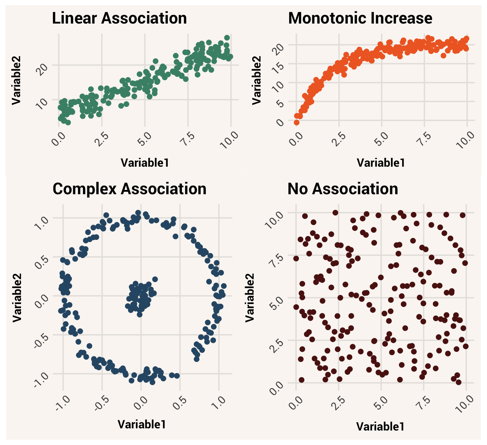
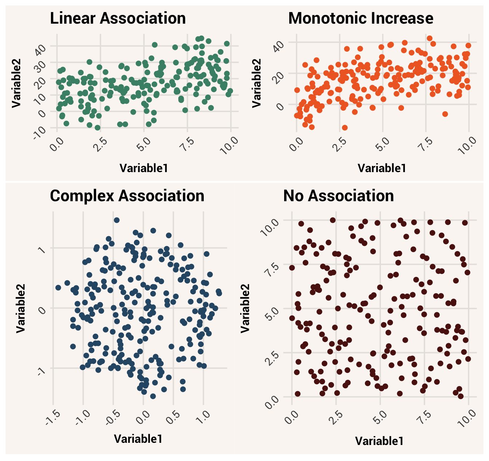

6 Patterns Among Multiple Variables

Note
From here on out we will pre-load all needed packages at the top of the chapter. You’ll see the status of this loading in the above indicator. Remember you have to use library(package) when writing R code on your own computer, however.
Examining distributions of single variables is an important starting place. This helps us describe that variable in an efficient way, which is one of the central research goals we discussed in Chapter 1. But as data analysts, our interests usually go beyond exploring patterns of variation in a single variable. Sometimes we want to predict what data of some variable will look like based on information in another variable. Sometimes we want to explain how one variable is a part of the data generation process for another. To accomplish these other goals, we need to consider multiple variables at once.
6.1 Visualizing two variables
Our dataset studentdata has many variables in it:
SurveyYear: what year these data were collectedSex: Respondent’s sex; “Male” or “Female”Ethnicity: Respondent’s ethnic/racial identity; “White”, “Black”, “Asian”, “Latino”, “Middle Eastern”, or “Other”IDLast: Last digit of the respondent’s student ID numberSiblings: Number of siblings the respondent hasCollegeYear: Year in college, expressed with numbersJob: Respondent’s job status; “Not Working”, “Part-time Job”, or “Full-time Job”SleepHours: How much sleep respondent got the night beforeNose: Length of nose, in mmEar: Length of right ear, in mmHand: Length of right hand, in mmHeight: Height in inchesStatsExperience: Whether or not respondent had ever taken a stats class before; “Yes” or “No”StatsEmotions_1-StatsEmotions_10: Respondent’s answers to how strongly they felt each of ten different emotions when studying statisticsStatsBeliefs_1-StatsBeliefs_4: Respondent’s answers to how strongly they agreed with each of four statements addressing their beliefs about statistics importance and self-efficacy
Let’s say our research question is about both the height and hand size of students in our dataset. Are people with longer hands typically taller too?1 This is a question about how observations vary across two variables at once. What’s the center and spread of Hand in our dataset, and how does the center and spread of Height change based on someone’s Hand value?
Like we did in Chapter 5, it is helpful to start thinking about multivariate distributions by visualizing them. Before, we made a histogram of one variable. We did this using the ggplot() function with just one argument in the aes() call: whatever variable we wanted to put on the x-axis.
TipExercise
Make a histogram of Height using the ggplot() function.
In a histogram, the variable you want to look at has values on the x-axis. The y-axis tells you the count of observations in the data that have each of those values. Because of this, a histogram is considered a one-variable plot - you can only look at variation in one variable at a time.
How can we add a second variable to this plot? One way is to use a different type of plot called a scatter plot. In a scatter plot, one variable is on the x-axis and the other variable is on the y-axis, making a 2D space. Each observation in the dataset is represented by a single point positioned in this 2D space, with its x-coordinate corresponding to its value on the x-axis variable and its y-coordinate corresponding to its value on the y-axis variable.
scatter plot = a type of data visualization plot that shows the relationship between two quantitative variables by plotting each observation as a point in a 2D space
To make a scatter plot with the ggplot2 package, we replace the geom_histogram() function with a different geometric function, geom_point(). We also need to add information to the aesthetic mapping, so it knows to look for a variable to use on the x-axis AND the y-axis.
You can think of a scatter plot as a 2D histogram. If you shoved all the points down along the x-axis, they would pile up like in the histogram for height. Likewise if you shoved all the points to the left along the y-axis, they would pile like a histogram for Hand turned on its side. See Figure 6.1 for an example:
By using two variables as the two axes of the plot, we can see what value a single observation has on both variables at once. We can also see, for a given value on the Hand variable, what central tendency and spread of Height values are there? This is like if we made separate histograms of Height, one for each value of Hand. Figure 6.2 is the same scatter plot, but highlighting only a subset of the data that fall within certain values of Hand. Move the slider to see how focusing on different values of Hand changes the distribution of the associated Height values. Some questions to ponder at the moment: does it seem like the center of the Height distribution is moving upward as Hand values increase? Does it look the spread of each subset histogram is the same, wider, or narrower than the spread of the overall Height histogram??
Height and Hand and a histogram of Height, shown for a subset of the data where Hand values fall within a specific quantile.
Note
In Chapter 7, we will learn about even more types of plots for different kinds of variables.
6.2 Distributions as probability
When we plot and summarize the center and spread of one variable, we are looking at where the middle of the distribution is and how wide the distribution is. But another way to think about these features is to treat the dataset as a big bag of marbles, and consider what would happen if we randomly drew one marble/observation from the bag. What is your best guess for what a randomly selected value would be? How confident are you that the next marble/observation you drew would be that value?
Earlier we calculated the mean of Height in our dataset to be 66.2. Now look at where that value is on the overall histogram of Height. It’s not the most common value in the histogram (indeed no one responded with decimals like this), but we know that it minimizes the sum of squares of a variable. In other words, if we use the mean as a guess for what a randomly-drawn value will be, we will be less wrong on average than if we used any other number to guess. For this reason, we can think of central tendency as representing what data values are probable.
But even if you are less wrong on average by guessing the mean, that doesn’t mean you’ll get it right for this specific guess. If you guessed the mean, how confident are you that you would be within 5 inches of the actual value? Would you be willing to bet someone a dollar, or ten dollars? You’d probably be more confident if you were guessing about a distribution that had a standard deviation of 3 than if it had a standard deviation of 10. For this reason, we can think variation as representing how much uncertainty there is about what any specific data value will be.
With words like “probable” and “uncertainty”, we are talking about probability. Probability refers to a random process, where you don’t know exactly what will happen next. We can think of selecting data points from a distribution as a probabilistic random process - we don’t know which data point we will pick. But “random” doesn’t mean all numbers are equally likely. Some values will be more likely than others (more probable), even if it’s not guaranteed what will happen on the next draw (uncertainty). Unusual values can still happen, but across many draws the more probable values will come up more often.
probability = the likelihood of a specific event occurring
When we’re dealing with probabilistic processes, we often want to reduce uncertainty as much as we can. What will the weather be like when you drive to the beach? What is the economy likely to be like in 6 months? It’d be nice to be more certain about what range of values is likely to happen, so you can make better decisions about what clothes to wear or if you should risk leaving a safe but boring job.
So if we’re randomly predicting a value in a data distribution like Height, we want our guess to be as good as possible. By guessing the mean value, we are going to be wrong by 3.61 on average.2 Is there any other information we can use to tell us how to adjust our guess and make a better prediction?
6.3 Independence vs. association
Now let’s get back to talking about two variables. We will use the general notation \(x\) and \(y\) to know which one is which. When we are asking a research question that involves the relationship between two variables, what we are really asking is whether the variables are associated. If two variables are associated, this means information from one variable helps you make better guesses about the value of the other variable.
association = a relationship between variables such that knowing the value of one improves predictions about the value of the other
Let’s see this in action. First, we will create two vectors for the Height values for people with the shortest and longest hands, stored separately. Then we will look at their means and standard deviations.
If we didn’t know someone’s height and we had to guess, without any other information to help, our best guess would be the variable mean 66.2 but we would be uncertain that that was correct. We’d be wrong by about 3.61 inches on average.
However, if we know that the person in question had a short hand, we could change strategy. Now we could focus only on the data in the height_shorthand distribution and use that mean for our guess. In other words, having some information about the person changes what our best guess is for them (from 66.2 to 63.75).
It also changed our level of uncertainty. Because the spread of the height_shorthand distribution is 2.93, which smaller than 3.61, our new guess is more likely to be correct than our original guess. There is still some variation we can’t predict, but we are more confident now.
This is the essence of association. If two variables are associated, knowing an observation’s value on one variable changes your guess and decreases your uncertainty about the value of the other variable. We just saw this happen with Hand and Height, so we would say these variables are associated. Another way people talk about this kind of relationship is to say the Hand explains or accounts for some of the variation in Height.
Not all variables are associated with each other. Let’s look at a scatter plot, Hand and SleepHours this time:
TipExercise
Finish the code below to make a scatter plot with Hand on the x-axis and SleepHours on the y-axis.
Now there doesn’t appear to be any change of the SleepHours distribution as we change values on Hand. Indeed, when we calculate the mean of these:
These values are not all that different. When comparing the new standard deviations with that of the overall SleepHours distribution:
Knowing someone’s hand size doesn’t help our uncertainty about their sleep hours - in fact it makes our uncertainty worse! In this case, we wouldn’t say that hand size is associated with sleep hours. We would say these variables are independent of each other.
independence = a relationship between variables where one variable contains no information to help make predictions about the value of the other variable
It’s important to emphasize here that when we say one variable \(x\) is associated with another variable \(y\), we don’t always mean that one causes the other. An association between the two just means that knowing the value of some observation on \(x\) improves our guess about what \(y\) is. This could be because of causation, but there are many other reasons two variables could be associated. Whenever we use the word “associated” in this book, make sure you’re not automatically assuming that a causal relationship is involved.
6.4 Types of association
There are different ways that two variables can be associated with each other. Take a look at the scatter plot in Figure 6.3 to see some examples.
6.4.1 Association form

In all of these examples, Variable1 is associated with Variable2 because knowing a specific value of Variable1 helps you make a good guess about what an observation’s value on Variable2 will be. But exactly how a change in Variable1 adjusts one’s guess about Variable2 depends on the form of the association.
association form = the functional relationship between two associated variables; what mathematical function is needed to transform \(x\) values into \(y\) values
For instance, in the first plotted association, you could draw a straight line through the data. This is known as a linear association. In such an association, there is one best \(y\) value that corresponds to each \(x\) value. In addition, what that \(y\) value is changes consistently in one direction as you move up the x-axis. Moving from 0 to 1 on \(x\) changes the best guess of \(y\) by the same amount that moving from 5 to 6 on \(x\) does. An example of a linear association is the relationship between time spent and money earned in an hourly-wage job. Each additional hour worked nets you a set amount of additional money, so knowing how much money you have earned in a day is a simple linear function of time worked times pay rate.
linear association = a relationship between two variables such that consistent changes in \(x\) correspond to consistent changes in \(y\), across the whole range of \(x\)
In the second plot, notice that \(y\) values get bigger as \(x\) values get bigger, like in the first plot. But now the line we would draw through all the points is curved. The same amount of increase in \(x\) corresponds to different amounts of increase in \(y\) depending on where you are along the \(x\) axis. This is known as a non-linear association - the trail of data points is not a straight line.
non-linear association = a relationship between two variables where an increase in \(x\) corresponds to a change in \(y\), but the amount of change depends on the value of \(x\)
The specific non-linear association shown in plot 2 is additionally monotonic, since the probable value of \(y\) only goes up (or only down) as \(x\) increases. It is also one-to-one, meaning there is one best \(y\) value for each \(x\) value. The relationship in plot 1 is monotonic and one-to-one as well, but with the added detail of being linear. An example of a monotonic non-linear association in real life is the relationship between age and height in humans. In the first few years of life you gain height rapidly, but this slows in adolescence and eventually stops increasing in adulthood.
monotonic association = a relationship between two variables such that an increase in \(x\) corresponds to strictly an increase or decrease in \(y\), but by an inconsistent amount at different points in the \(x\) rangeone-to-one association = a relationship between two variables such that there is one best \(y\) value for each unique \(x\) value
The association in the third plot is an even more complex association. Here, knowing \(x\) still helps us make better guesses about \(y\) - e.g., if we knew \(x = 0\), we wouldn’t guess \(y = -0.5\) because data never appear there on the scatter plot. But there isn’t any specific direction that \(y\) goes in as \(x\) increases - the lines in the plot curve up and down depending on what part of the \(x\) range you’re looking at. Also, multiple different values of \(y\) are associated with a specific value of \(x\). We would call this association non-linear, non-monotonic, and one-to-many.
one-to-many association = a relationship between two variables such that multiple \(y\) values correspond to a single \(x\) value
6.4.2 Association strength
The form of an association is about the shape made when \(x\) and \(y\) are plotted together. Meanwhile, the strength of the association refers to how clear this relationship is when plotted.
association strength = how much knowing \(x\) reduces uncertainty about \(y\)
The prior plots in Figure 6.3 were strong associations - the patterns among the variables were very clear. Another way of thinking about a strong association is that knowing \(x\) reduces your uncertainty about \(y\) by a lot - the range of probable values for \(y\) is a lot narrower once you know \(x\).
But not all relationships are strong. Sometimes a variable \(x\) only has a little bit of information about \(y\). In this case, there is still a lot of uncertainty about what \(y\) will be even if you have a specific \(x\) value in hand. Figure 6.4 shows the same form of relationships as before, but this time the relationships are much weaker. Can you still tell what the shape of each association is supposed to be? Can you tell the real associations apart from the independent variables?

Strong associations look pretty and are easy to see. Unfortunately, they are pretty rare in real-world data applications. Most of the time we will be dealing with weak relationships that are hard to see with the eye. In these cases, it is helpful to describe the association with some quantifiable metric, as we did with quantifying single-variable distributions (see Section 6.5 below).
6.4.3 Association direction
Lastly, if we are looking at some sort of monotonic association, we can also talk about the association’s direction. A positive association means that as \(x\) increases, \(y\) tends to increase too. A negative association means that as \(x\) increases, \(y\) tends to decrease. In Figure 6.3, both the linear and monotonic associations were positive associations because the lines moved up - as you move up across the x-axis, the y-values got bigger. If the lines of data had started in the upper left corner and moved down, that would be a negative association.
association direction = whether \(x\) and \(y\) both increase/decrease, or if one decreases while another increases
6.5 Association metrics
In this chapter we will focus on metrics we can use to describe monotonic associations.3
6.5.1 Covariance
The first one is is for describing linear relationships and is called covariance. Covariance, often notated as \(s_{xy}\) or \(cov(x,y)\), is defined as:
covariance = a measure of association between two variables, calculated by summing the products of their deviations and dividing the sum by n-1
\[s_{xy} = \frac{\sum_{i=1}^{n} (x_i - \bar{x})(y_i - \bar{y})}{n-1} \tag{6.1}\]
To interpret this equation, focus on the \((x_i - \bar{x})\) and \((y_i - \bar{y})\) parts first. These terms calculate, for every observation i, how far away that observation is from the mean of each respective variable. By multiplying them together, we are creating a value that will be positive if both \(x_i\) and \(y_i\) are above their respective means, or if both are below their respective means - i.e., deviating from the mean in the same direction. On the other hand, if \(x_i\) is below its mean while \(y_i\) is above its mean (or vice versa), the product will be negative.
Next we sum all these products across observations. If this sum is a positive number, that means there are more observations where \(x\) and \(y\) are in consistent directions (both above or both below their means) than there are observations where \(x\) and \(y\) are in opposite directions. This is a sign of a positive association. If the sum is negative, that means there are more observations where \(x\) and \(y\) are in opposite directions than there are observations where they are in consistent directions - a negative association. If the sum is 0, there’s no prevailing association and the variables are independent.
Finally, we divide this sum by \(n-1\). In this way we can quantify how much of this positive/negative co-deviation there is, per observation in the dataset.
To calculate the covariance of two variables in R, we can use the cov() function. To make this function work correctly, we have to pass two variables as separate arguments. If those variables have any NA values, we also have to tell the function what to do about that with the use = argument. A value like "pairwise.complete.obs" tells cov to only consider observations that have complete data in both the \(x\) and \(y\) variable - data that are “pairwise complete”.4
If you noticed that “covariance” sounds a lot like “variance” from last chapter, that’s because their equations are very similar! Look at the covariance equation again, and compare it to the variance equation:
\[s_x^2 = \frac{\sum_{i=1}^{n} (x_i-\bar{x})^2}{n-1} \tag{6.2}\]
The only difference is the \((x_i - \bar{x})(y_i - \bar{y})\) term in the numerator of the covariance equation, vs. \((x_i - \bar{x})^2\) in the variance equation. In fact, the variance equation is just a special case of the covariance equation! Since \((x_i - \bar{x})^2 = (x_i - \bar{x})(x_i - \bar{x})\), the variance of one variable is really just the covariance of that variable with itself.
6.5.2 Pearson Correlation
Does a covariance of 38.04 between Hand and Height make sense to you? It’s a positive number, so that tells us that the association between these two variables is positive. But is the number indicative of a strong or weak association?
Like variance, covariance is not easy to understand on its own. And it will be bigger or smaller not just because of the strength of association between two variables, but because of the units those variables are on. Covariance is, again, the basis of a lot of other statistical tools for analyzing relationships between variables. But because it is not easy to interpret, a different measure known as correlation is often used by people trying to communicate about associations in data.
correlation = a standardized measure of the linear association between two variables
Correlation is an umbrella term for many different ways to calculate an association, but the key feature of a correlation is that the variables used in the correlation equation are standardized in some way - they will all use the same units. This way the same association strength will get the same correlation score regardless of which variables the metric was computed on. It also means the correlation score will be bounded between -1 (strongest possible negative correlation) and 1 (strongest possible positive correlation), with 0 meaning no association. This makes it easy to look at the score and immediately understand how strong the association is.
The most popular correlation metric is called Pearson correlation 5. It is often notated as \(r\) and is calculated by dividing the covariance of two variables by the product of their standard deviations:
Pearson correlation = a measure of linear association between two variables, calculated by dividing the covariance of the two variables by the product of their standard deviations
\[ r = \frac{s_{xy}}{s_x s_y} \tag{6.3}\]
Alternatively, the Pearson correlation can be calculated by taking the covariance of the two variables after they have been z-scored (since z-scoring a variable is dividing it by its standard deviation).
The most straightforward way to calculate a Pearson correlation in R is to use the cor() function. It works like cov(), such that you need to pass it two variables as arguments and tell it what to do about NA values.
TipExercise
Use cor() to find the Pearson correlation between Hand and Height.
A Pearson correlation of 0.51 is not the strongest it could be (that would be 1). But it is not too shabby either.6
6.5.3 Correlations in non-numeric data
As we saw in Chapter 5, categorical data can be quantified by turning it into dummy variables. Once represented with 0s and 1s, a Boolean variable can fit into a covariance or correlation equation just as well as a numeric variable can. So it is possible to compute the correlation between categorical and numeric variables, or between two categorical values.
Statisticians use different names for these cases to keep it clear what type of variables are involved. While the basic correlation equation done with two numeric variables is called a Pearson correlation, this measure is called a point-biserial correlation when one variable is numeric and the other is Boolean. When both variables are Boolean, the correlation is called a phi coefficient (pronounced “fye”).
point-biserial correlation = the correlation between a numeric variable and a Boolean/binary variablephi coefficient = the correlation between two Boolean/binary variables
TipExercise
Find the correlation/phi coefficient between the two Boolean variables below. Since it’s the same math as a Pearson correlation, use the same R function.
Giving these cases different names is good for explicitly declaring what type of variables you are talking about7. However, it can be hard in practice to remember all these terms. The important thing to know about these correlation measures is that they actually aren’t different under the hood. They are all calculated the same way. You don’t have to learn how to do anything different.
6.5.4 Spearman Correlation
Another popular correlation metric is called the Spearman correlation 8. This one again involves dividing the covariance of the variables by the product of their standard deviations, but this time there is an additional step - we first rank the values of each variable. Ranking the variables means the smallest value in the variable becomes a 1, the second smallest becomes a 2, and so on. Ranking essentially puts all the values of a variable in order but removes information about how far apart those values are. This makes it a good metric for seeing how strong a monotonic relationship is that might not be strictly linear.
Spearman correlation = a measure of monotonic association between two variables, calculated by dividing the covariance of the two variables’ ranks by the product of their standard deviations
If we wanted to calculate the Spearman correlation by hand, we could use the rank() function on our variables before passing them to cor(). But cor() also gives us an option to skip this step and compute the Spearman correlation directly if we add the argument method = spearman.
6.6 Chapter resources
6.6.1 Learning goals
After reading this chapter, you should be able to:
- Explain what “explain” means
- Change plots with faceting and colors
- Make the corre ct type of plot for each type of quantitative/categorical variable relationship
6.6.2 New concepts
- scatter plot: a type of data visualization plot that shows the relationship between two quantitative variables by plotting each observation as a point in a 2D space.
- probability: the likelihood of a specific event occurring.
- association: a relationship between variables such that knowing the value of one improves predictions about the value of the other.
- independence: a relationship between variables where one variable contains no information to help make predictions about the value of the other variable.
- association form: the functional relationship between two associated variables; what mathematical function is needed to transform \(x\) values into \(y\) values.
- linear association: a relationship between two variables such that consistent changes in \(x\) correspond to consistent changes in \(y\), across the whole range of \(x\).
- non-linear association: a relationship between two variables where an increase in \(x\) corresponds to a change in \(y\), but the amount of change depends on the value of \(x\).
- monotonic association = a relationship between two variables such that an increase in \(x\) corresponds to strictly an increase or decrease in \(y\), but by an inconsistent amount at different points in the \(x\) range.
- one-to-one association = a relationship between two variables such that there is one best \(y\) value for each unique \(x\) value.
- one-to-many association = a relationship between two variables such that multiple \(y\) values correspond to a single \(x\) value.
- association strength = how much knowing \(x\) reduces uncertainty about \(y\).
- association direction = whether \(x\) and \(y\) both increase/decrease, or if one decreases while another increases.
- covariance = a measure of association between two variables, calculated by summing the products of their deviations and dividing the sum by n-1.
- correlation = a standardized measure of the linear association between two variables.
- Pearson correlation = a measure of linear association between two variables, calculated by dividing the covariance of the two variables by the product of their standard deviations.
- point-biserial correlation = the correlation between a numeric variable and a Boolean/binary variable.
- phi coefficient = the correlation between two Boolean/binary variables.
- Spearman correlation = a measure of monotonic association between two variables, calculated by dividing the covariance of the two variables’ ranks by the product of their standard deviations.
6.6.3 New R functionality
You may have an instinctual answer to this already, but it’s always good to back up our pre-concieved notions with data!↩︎
Note on average. For just one guess, you might get lucky and be right on target! Or get unlucky and be way off. If you repeatedly guessed though, the difference between your guess and the actual value would average to 3.61.↩︎
It is possible to quantify non-monotonic associations too, but it is less common to do and the math is more complex. This is a decent explanation that will make sense once you’ve read ?sec-ch8)↩︎
read the documentation for the
cov()function to see what otheruse =options there are.↩︎Named after the mathematician who invented it, Karl Pearson↩︎
In fact if you work with human data, you will rarely get an association this large. So enjoy it now!↩︎
and you get more professional recognition if you publish a “new” measure↩︎
Named after another inventive mathematician, Charles Spearman↩︎